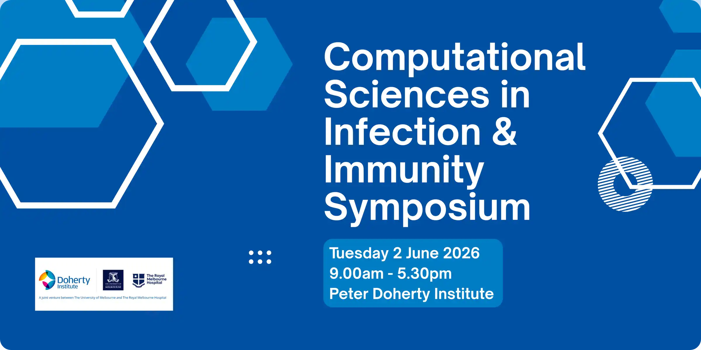
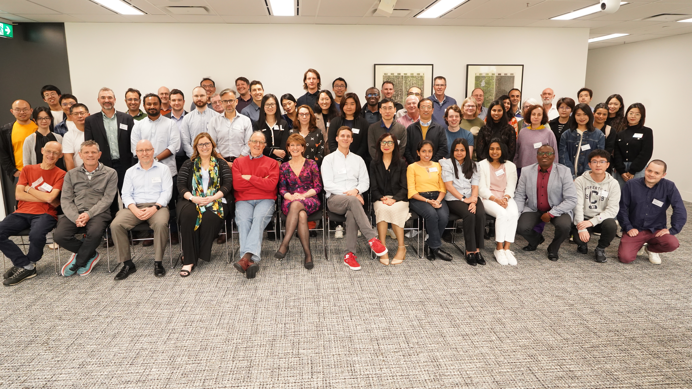
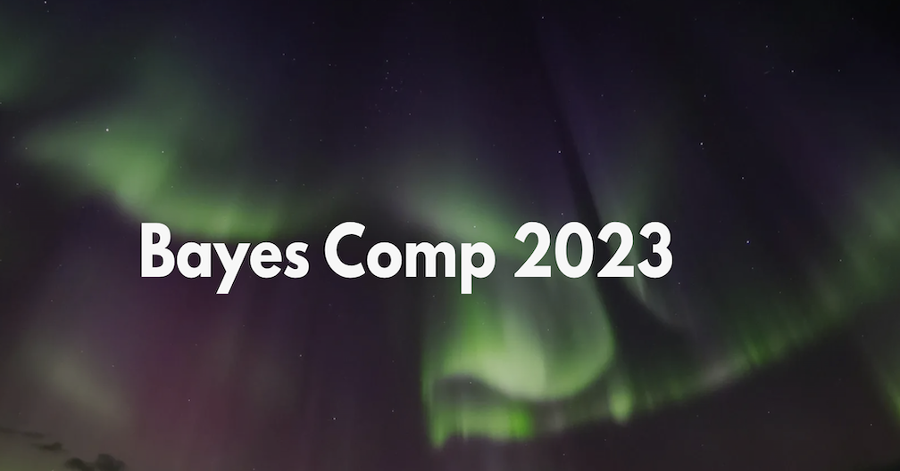
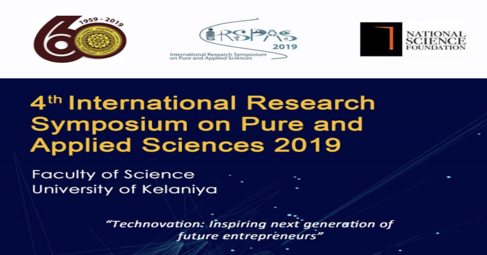
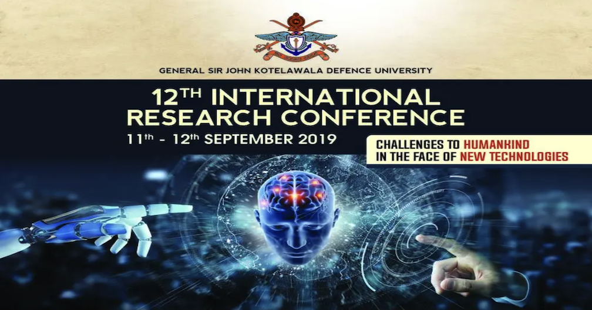
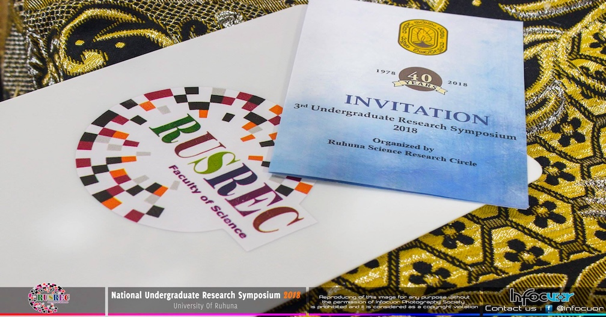

Talks
This section features my contributed talks, invited talks and poster presentations, together with their accompanying materials.
ABC-based Forecasting in State Space Models

ABC-based Forecasting in State Space Models

ABC-based Forecasting in State Space Models

Approximate Bayesian Forecasting in Intractable and Misspecified State Space Models

Modelling and Forecasting the Income of Pepper Exports in Sri Lanka

Forecasting the Unit Cost of Electricity Generated by Fossil Fuel Power Plants - A Case Study in a Diesel/Heavy Fuel Oil Power Plant in Sri Lanka

Forecasting the Unit Cost of Electricity Generated by Fossil Fuel Power Plants - A Case Study in a Diesel/Heavy Fuel Oil Power Plant in Sri Lanka
No matching items